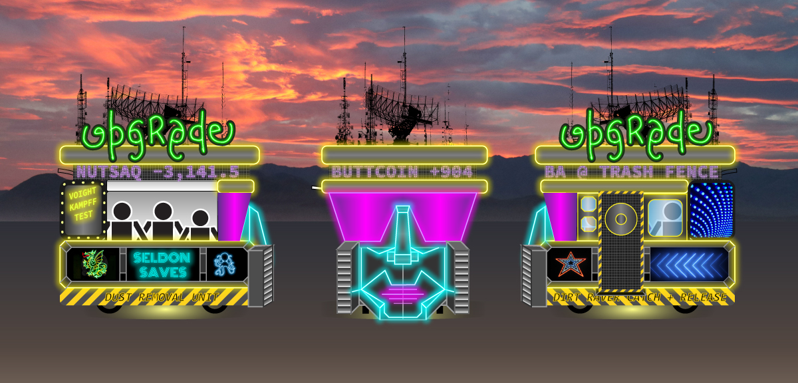

U.P.G.R.A.D.E. Node
New Mutant Vehicle 2018
WTF...
What We’re Creating
The U.P.G.R.A.D.E. Node is a futuristic, free-roving kiosk, inspired by sci-fi automated urban machines.. The exterior is entirely re-shaped. The vehicle-bot embodies a living identity, with polygon robot face and lighting elements animating the mouth allowing it to speak. Underneath the vehicle is a mini food truck. Part of the exterior opens like a hatch to give out snacks, coffee, alcohol shots, and gifts. We will play many genres of music and sound effects for different moods and times of day.
It will contain our moderate speakers for playing robot voice, sound effects, and music. The sides are covered in cyberpunk textures and extruded shapes, along with LED signs promoting "upgrades" and cyber mysticism. We will be creating stencil lightboxes with a laser cutter. It’s topped with a stock-exchange-style reader board to announce what we're giving away, and generally ridicule tech culture. We’re also featuring our large-scale water printer, the STREET WEEPER. It leaves behind temporary written messages and patterns on the ground. This has been used at several events.
Why We’re Making It
The vehicle and crew will roam around the desert engaging and gifting with lots of folks, providing rides as possible. We’ll park and celebrate at open-playa art projects. We seek to indulge the skills and experience our crew of many long time burners brings together, including: building, sculpting, electronics, programming, music, and sound design,. We're creating in a project that engages with the immediacy of the event throughout the week. And to be super rad cyberpunks cynics.
Experience...
Aesthetics
The mobile U.P.G.R.A.D.E. kiosk is a futuristic, cyborg-religio, vending machine, info cart, made for the urban setting. Its staff provides service depending on robotic clientele and market needs. The crew of the truck will wear uniform elements, playing various roles to interact with those who approach the bazaar UPGRADE window.
Upgrades
Participants may be required to prove robot status before they are upgraded. We will offer snacks like fresh popcorn, and upgrade gifts like ibuprofen, immodium, or mole skin.
Street Weeper
During the day, we’ll feature a near water printer. It uses many computer-controlled solenoid valves, on a gravity fed water line, to create temporary images on the ground. The printable area is about 8 feet wide and works when driven at a slow/steady speed. We will allow participants to write messages to be printed on the ground behind the vehicle… which will soon evaporate.
Details...
Team
Josh, Alex Wilson, Chris, Brianna, Morgan Hammer, Jason, Josh B, Leo, Gabe Stern, Bee
Team past projects: Flight to Mars, Arson Island, Space Virgins, CakeWalk bus, Attacks from Mars bus, Cloud City bus, Monstero vehicle, Treehugger bus, Squiddudha bus, Buddha bus.
Team skills: fine arts, metal fabrication, construction, LED wiring, Arduino programming, project management, illustration, synthetic sound design
Amenities
The vehicle has a hand washing station on one of the two counters. Two large windows, side and near, open upward to expose the inside and allow a breeze.
Lighting
Basic frame: EL wire along each major polygon in robot face; small blinkies in the antennas, neon designs of various 2-frame animations, scrolling reader board; laser-cut lightboxes. Top-to-bottom light show is central to vehicle concept.
Safety Considerations
- Vehicle capacity is 6 persons
- Doors will be closed while vehicle is moving
- Extruded panels are designed at eye level
- Lower panels will have low profile to avoid tripping hazards
- Vehicle will have noticeable lights and sounds when in motion
- Primary interaction while vehicle is parked (through a service window). We’ll welcome passengers when moving.
Operating Procedures
The vehicle will be run by a minimum three person crew; the driver, on-board spotter, and external spotter in front. In addition to helping drive, spotters will prevent anyone from trying to board while driving. While on city streets, or in a crowd, we may send a second person out to clear the way as we move. We will have a fire extinguisher and first aid kit. The enclosed vehicle will reinforce the policy of not boarding/un-loading while in motion. Exterior light will be used at night to illuminate the playa surface for safety. Nothing will be handed to participants while in motion.